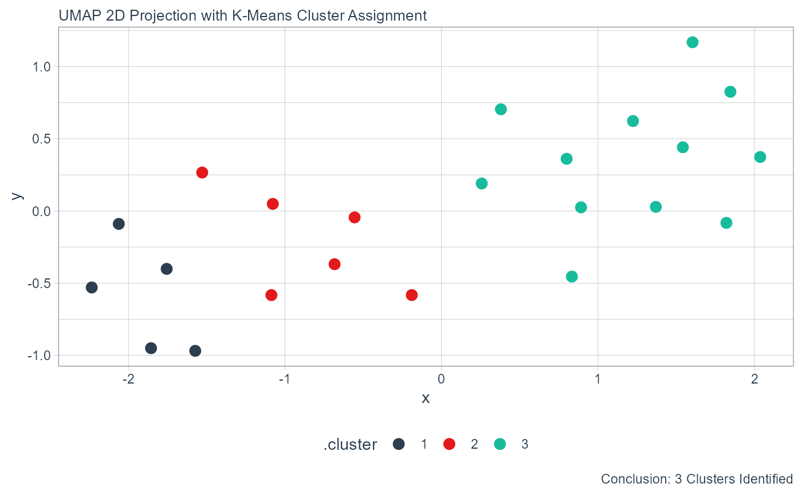

Create a UMAP Projection plot.
Arguments
- .data
The data from the
umap_list()function.- .point_size
The desired size for the points of the plot.
- .label
Should
ggrepel::geom_label_repel()be used to display cluster user labels.
Details
This takes in umap_kmeans_cluster_results_tbl from the umap_list()
function output.
See also
https://github.com/jlmelville/uwot (GitHub)
https://github.com/jlmelville/uwot (arXiv paper)
Examples
library(healthyR.data)
library(healthyR)
library(dplyr)
library(broom)
library(ggplot2)
data_tbl <- healthyR_data %>%
filter(ip_op_flag == "I") %>%
filter(payer_grouping != "Medicare B") %>%
filter(payer_grouping != "?") %>%
select(service_line, payer_grouping) %>%
mutate(record = 1) %>%
as_tibble()
uit_tbl <- kmeans_user_item_tbl(
.data = data_tbl
, .row_input = service_line
, .col_input = payer_grouping
, .record_input = record
)
kmm_tbl <- kmeans_mapped_tbl(uit_tbl)
ump_lst <- umap_list(.data = uit_tbl, kmm_tbl, 3)
#> Joining, by = "service_line"
umap_plt(.data = ump_lst, .point_size = 3)
